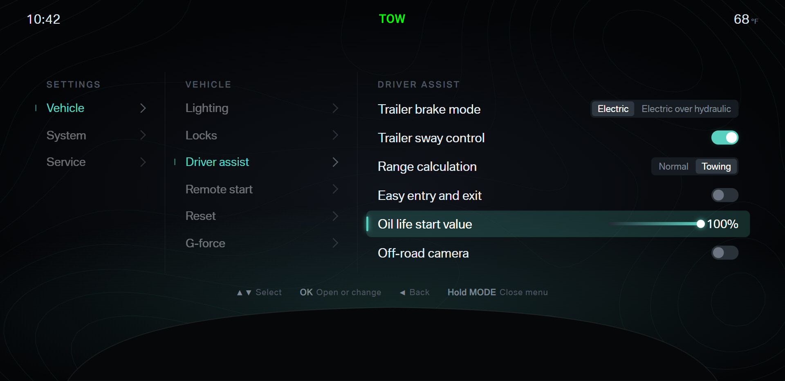
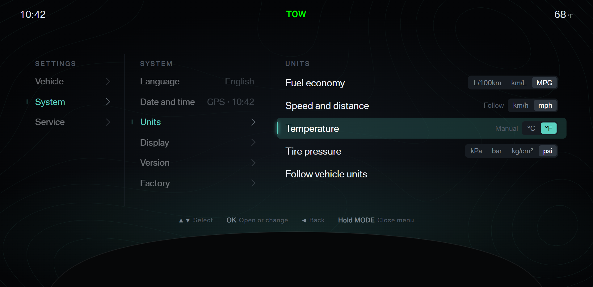
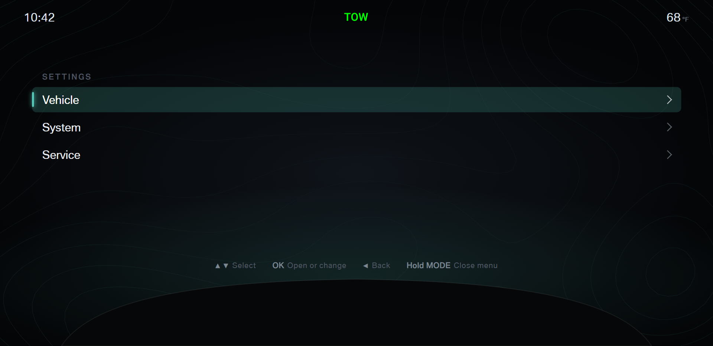
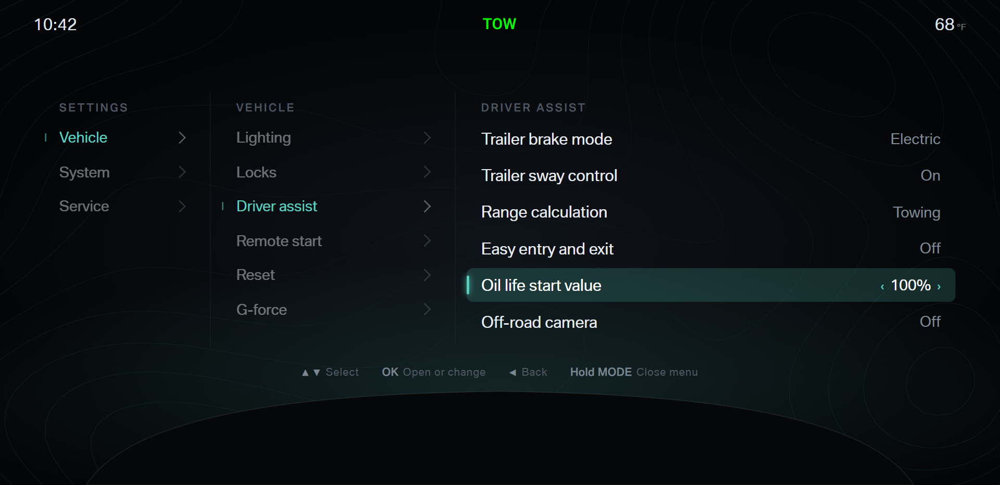
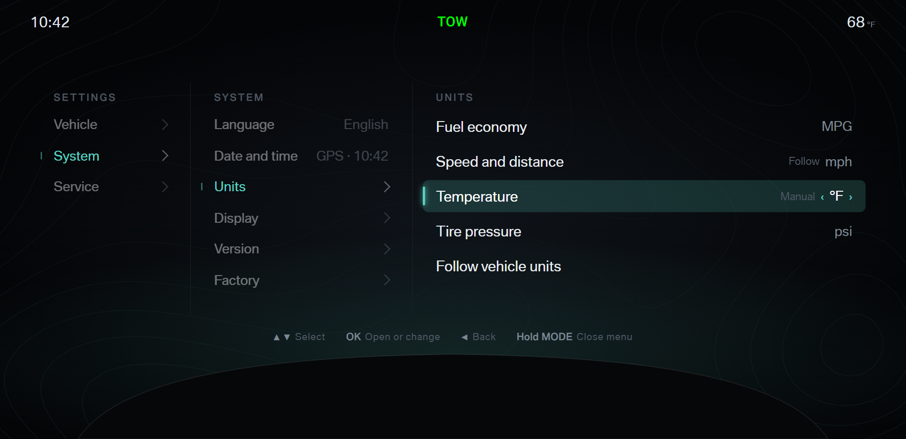
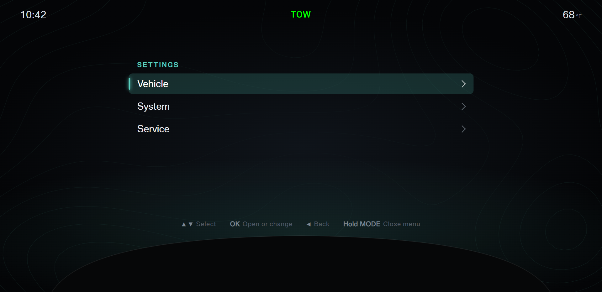
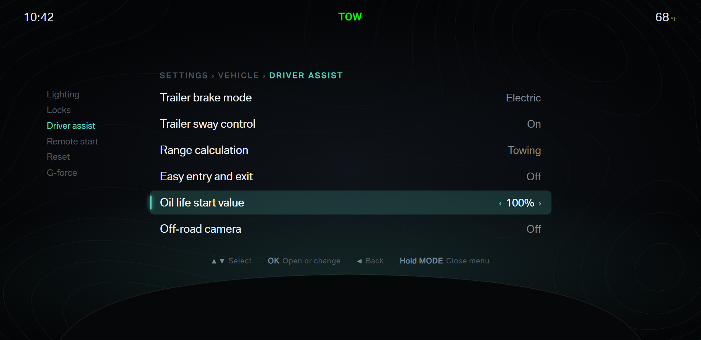
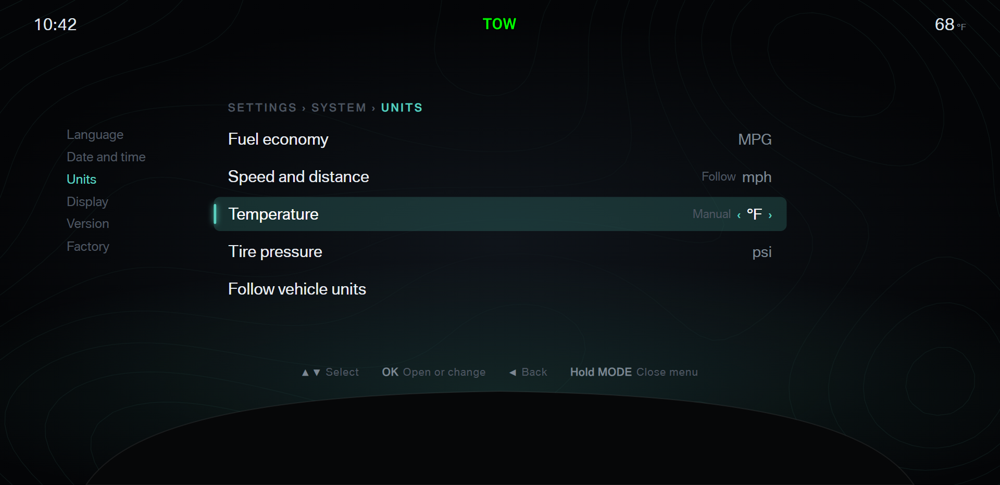
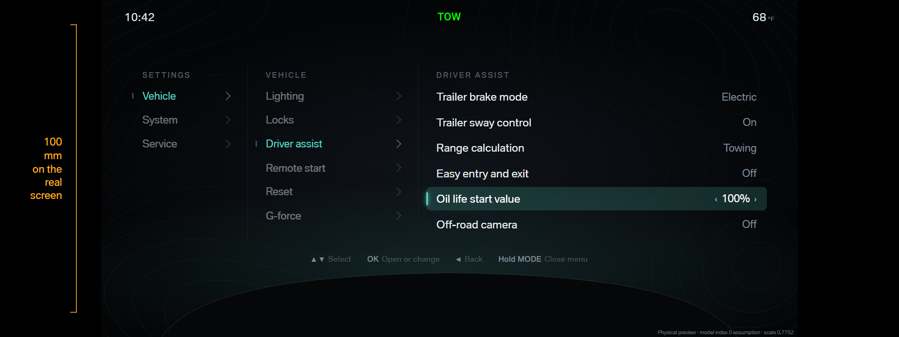

A · Driver assist

B · Driver assist

A · Units

B · Units

The settings menu gets one owned page in place of the vendor pages. The new menu keeps every setting the truck supports, shows unsupported settings with a reason, and fixes the navigation and setting defects from the menu audit. The mocks sit on the locked Towing A frame (top bar, telltales, cruise region). The menu takes the center area above the steering column shroud, as the stock menu does.
Three picks, each open: 1 · layout, 2 · values, 3 · confirm. Pick each one separately.
A · Columns: every open level stays on screen, left to right, as the stock menu does. The deepest column has the focus; parent columns fade to the path. B · One list: one page at a time, with the path line on top and the parent page in a quiet side list.






A · Text: the value as text at the right. The focus row shows ‹ › where OK changes the value. B · Controls: switches for on and off, segments for a short choice, and a meter for a percent. Every choice stays visible.
The stock menu resets on one press of OK, so one bump of the wheel key can clear a trip or the oil life. Both options add a confirm step to the reset rows and the factory reset. A · Press twice: the first OK arms the row for 5 seconds (the bar runs down); a second OK sends the reset. B · Hold: hold OK for 1.5 seconds (the bar fills); a short press does nothing.
